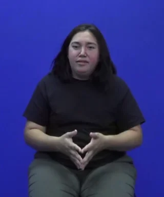
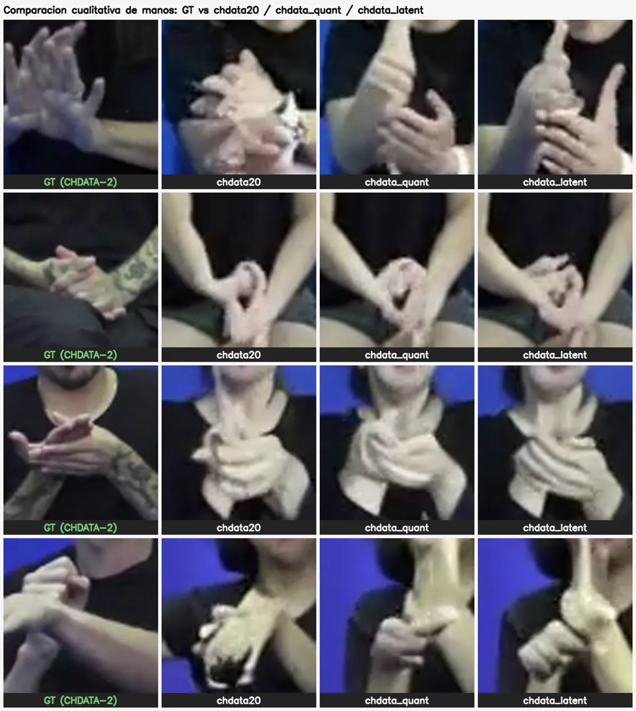

Fondecyt Regular 1250344 · Lengua de Señas Chilena
Generación de video en Lengua de Señas Chilena con preservación de identidad
1 Departamento de Ciencias de la Computación, Universidad de Chile · 2 Escuela de Ingeniería Informática, Universidad de Valparaíso
Evaluación de estimadores de pose (Yáñez y Aguilera) ↗ Paper CLEI 2026
Entrada
- TEMA
- IR
- ENTREVISTA
- TRABAJAR

Salida
Cada glosa sale de un clip real del catálogo, que reúne a los 14 informantes con que se entrenó el
difusor. El sistema adapta cada esqueleto al cuerpo de la persona de la foto, une los clips y el difusor
chdata12-384-FT renderiza la frase con su apariencia.
Resumen
Este trabajo busca construir un traductor de texto a video en Lengua de Señas Chilena (LSCh) que muestre a una persona concreta señando. Partimos de SignViP, un método publicado que genera la pose desde el texto y la renderiza con un difusor de video, y lo llevamos primero a PHOENIX y luego a Chilean2Sign, el corpus chileno del proyecto. El difusor aprendió a representar a quien seña conservando su identidad, pero la generación de la pose desde el texto no logró producir señas correctas con los datos disponibles. A partir de ese resultado diseñamos un sistema propio, interpolado, que recupera señas reales del corpus para cada glosa, las adapta al cuerpo de la persona de referencia y las une para que el mismo difusor las renderice.
01
Dos maneras de llegar a la pose, un mismo difusor
Los dos sistemas terminan en el difusor de video de SignViP, que combina Stable Diffusion 1.5 con un appearance encoder que toma la identidad de una foto, un condition encoder que lee la pose y módulos temporales de AnimateDiff. La diferencia está en cómo obtienen la pose. SignViP la genera desde el texto, mientras que interpolado la recupera de grabaciones reales.
Etapas que no generalizan con los datos actuales · Difusor compartido, que recibe la pose y una foto de referencia y entrega el video
02
El difusor ve el cuerpo con DWPose y las manos con HaMeR
El difusor no recibe el video original, sino dos condiciones extraídas de él. Una es el esqueleto 2D de DWPose, con cuerpo, cara y manos; la otra es la malla 3D de cada mano que reconstruye HaMeR, renderizada como video. Con esas condiciones y una foto de la persona, el difusor genera cada cuadro. Las manos son la parte más fina de la señal y la que más se degrada.
chdata12-384-FT.03 · SignViP
En PHOENIX el avatar se mueve bien; el error entra con el GPT
Replicamos SignViP completo sobre RWTH-PHOENIX-Weather 2014, un corpus de referencia en lengua de señas alemana. Con poses reales, el difusor reconstruye a quien seña con fidelidad, y pasar por el FSQ casi no cambia el resultado. Cuando el GPT genera la pose desde el texto, el avatar sigue fluido y reconocible, pero las señas ya no son las de la oración y el FVD casi se triplica. La nitidez y el FID no empeoran, así que la pérdida es de contenido y no de calidad de imagen.
Las métricas caen al entrar el GPT
Modelo replicado sobre el conjunto de prueba de PHOENIX. pose real pose generada por el GPT
Tabla completa
| Métrica | Difusor | FSQ → Difusor | GPT → FSQ → Difusor |
|---|---|---|---|
| FVD ↓ | 528,5 | 598,3 | 1.526,6 |
| FID ↓ | 31,3 | 33,2 | 22,9 |
| SSIM ↑ | 0,819 | 0,780 | 0,643 |
| LPIPS ↓ | 0,087 | 0,114 | 0,270 |
| IDS ↑ | 0,633 | 0,633 | 0,574 |
| Nitidez (Laplaciano) ↑ | 748 | 746 | 726 |
El FID mejora en el flujo completo porque compara la distribución de los cuadros generados con la de los reales, sin emparejarlos. El GPT produce cuadros plausibles (la misma persona, el mismo fondo) aunque la seña sea otra.
04 · SignViP
En Chilean2Sign el difusor transfiere; el pipeline semántico no
Chilean2Sign es el corpus del proyecto. En sesiones de una hora, personas sordas señan lo que les evocan distintas imágenes, con temas libres, y el material usado reúne a 20 informantes. Sobre él entrenamos cinco versiones del sistema.
El difusor aprende a representar a una persona chilena
Con poses reales, el difusor conserva la ropa, el peinado y los accesorios de la referencia y reproduce la
postura. Cuando los clips de entrenamiento se recortan según las glosas (chdata12) en lugar de cortarse
al azar con pausas incluidas (chdata_clei), las caras ganan expresión y las manos dejan de fundirse.
El primer modelo dio origen al artículo aceptado en CLEI 2026.
| Métrica | chdata_clei | chdata12 |
|---|---|---|
| IDS ↑ | 0,478 | 0,515 |
| SSIM ↑ | 0,660 | 0,683 |
| LPIPS ↓ | 0,316 | 0,317 |
| FID ↓ | 50,1 | 57,4 |
| FVD ↓ | 1.389,0 | 1.653,6 |
Los conjuntos de prueba tienen 455 y 330 pares, y el FID y el FVD dependen del tamaño de la muestra. El modelo más expresivo mejora en identidad y estructura, y se aleja en las métricas de distribución.
Desde el texto, las señas se desarman
Con el GPT y el FSQ entrenados sobre 12 y luego 20 videos glosados, el flujo completo produce manos flotantes,
artefactos y rostros que cambian de persona. Corregimos los criterios con que se elegía el mejor FSQ y el mejor GPT
(chdata_quant) y ampliamos el codebook de 625 a 2.401 códigos (chdata_latent). El FSQ
alcanzó así su mejor reconstrucción, pero el video de extremo a extremo no cambió. Si la representación en su mejor
versión no mueve el resultado, el límite está en los datos.
Flujo completo de chdata12 (texto → GPT → FSQ → difusor) sobre el conjunto de prueba de
Chilean2Sign.
Los cinco modelos y sus tablas
| Modelo | Qué cambió | Resultado clave |
|---|---|---|
chdata_clei | Solo el difusor, con cortes aleatorios de 5 a 10 s (sin glosas todavía) | SSIM de validación 0,885; artículo en CLEI 2026 |
chdata12 | Pipeline completo sobre 12 videos glosados, con clips recortados según las glosas | Difusor con SSIM de validación 0,896; el GPT elegido predecía secuencias casi estáticas |
chdata20 | FSQ y GPT sobre 20 videos, con el difusor de chdata12 (entrenado desde cero no converge y queda en SSIM 0,65) | El error de cuantización del FSQ se multiplica por cinco durante el entrenamiento; IDS 0,091 en modo FSQ → difusor |
chdata_quant | El FSQ se elige por destilación y cuantización, y el GPT debe superar un mínimo de movimiento real | Error de cuantización de 1,420 a 0,494; GPT con movimiento real (DTW de 140,5 a 127,2) |
chdata_latent | Codebook del FSQ de 625 a 2.401 códigos | Destilación de 0,088 a 0,024, la mejor del proyecto; extremo a extremo sin cambios |
| Métrica | chdata20 | chdata_quant | chdata_latent |
|---|---|---|---|
| FVD ↓ | 2.804,1 | 2.718,2 | 2.704,4 |
| FID ↓ | 62,3 | 63,4 | 64,4 |
| SSIM ↑ | 0,666 | 0,664 | 0,665 |
| LPIPS ↓ | 0,309 | 0,310 | 0,309 |
| IDS ↑ | 0,091 | 0,087 | 0,089 |
| Métrica | chdata12 | chdata20 |
|---|---|---|
| FVD ↓ | 2.612,9 | 2.804,1 |
| FID ↓ | 61,5 | 62,3 |
| SSIM ↑ | 0,707 | 0,666 |
| LPIPS ↓ | 0,258 | 0,309 |
| IDS ↑ | 0,446 | 0,091 |
| Métrica | PHOENIX | Chilean2Sign (chdata_clei) |
|---|---|---|
| FVD ↓ | 528,5 | 1.389,0 |
| FID ↓ | 31,3 | 50,1 |
| SSIM ↑ | 0,819 | 0,660 |
| LPIPS ↓ | 0,087 | 0,316 |
| IDS ↑ | 0,633 | 0,478 |

chdata20, chdata_quant y chdata_latent.05 · Interpolado
Recuperar poses reales en vez de generarlas
Si el difusor funciona y lo que falla es generar la pose, la pose puede salir de grabaciones reales. Para cada glosa tomamos la instancia válida más larga del catálogo anotado (un clip con su DWPose y su HaMeR), adaptamos el esqueleto al cuerpo de la referencia y unimos los clips con una interpolación de 5 cuadros a cada lado. Por ahora la entrada son glosas, y la traducción de español a glosa queda fuera de este trabajo.
- PREGUNTAR
- RESPONDER
- DOCUMENTO
- RUT
- FIRMAR
- GRUPO
- PARTICIPAR
- SORDOS
- OYENTES
- BARRERA
- COMUNICAR
- HOMBRE
- MUJER
- AUTO
- CAMINAR
- VER
Secuencias de la informante 1 renderizadas con chdata12-384-FT. Las 12 glosas espaciales
(PRO1, AHÍ, ALLÁ…) quedan fuera porque apuntan a lugares que dependen de la oración, y lo mismo ocurre con los
clasificadores.
06 · Interpolado
Normalizar el esqueleto elimina los saltos entre informantes
Al mezclar clips de personas distintas, el difusor sigue al esqueleto y el cuerpo cambia de tamaño y de posición en cada unión. N1 ajusta la escala y la posición al cuerpo de la referencia, con lo que el salto desaparece. N2 ajusta además el largo de cada hueso y se nota cuando las proporciones son muy distintas.
chdata12-fvd-FT.07 · Interpolado
A 384×320, caras y dedos ganan nitidez
Reentrenamos el difusor a 384×320, con el doble de píxeles, con referencias tomadas de otro clip de la misma persona (como ocurre en inferencia) y con HaMeR al doble de resolución. En el mismo conjunto de clips sube la identidad y baja el error de las manos. A cambio aparecen fugas, porque la ropa o el cuerpo de quien hizo la seña original se filtran sobre la referencia.
chdata12-fvd-FT y chdata12-384-FT.| Métrica | chdata12-fvd-FT (272×224) | chdata12-384-FT (384×320) |
|---|---|---|
| IDS ↑ | 0,405 | 0,518 |
| SSIM ↑ | 0,813 | 0,878 |
| LPIPS ↓ | 0,089 | 0,069 |
| Hand SSIM a 384 ↑ | 0,571 | 0,592 |
| Error de keypoints de mano ↓ | 4,97 % | 4,03 % |
08 · Interpolado
La identidad se conserva distinto según el informante
Reconstruimos hasta 50 frases reales por informante con chdata12-384-FT y medimos la
similitud facial (IDS) entre el original y el generado. Parte de la diferencia entre informantes viene del tamaño
de la cara en el cuadro, ya que una cara más grande se asocia a un IDS mayor (ρ = 0,71). El modelo vio a estas
personas durante el entrenamiento, así que no es un conjunto separado.
IDS media por informante
Similitud coseno de embeddings faciales entre original y generado. Al pasar el cursor por una barra se ven la mediana y el número de frases.
Tabla
| Informante | IDS media | Mediana | Desv. | Frases |
|---|---|---|---|---|
| inf16 | 0,668 | 0,675 | 0,046 | 50 |
| inf9 | 0,637 | 0,632 | 0,047 | 50 |
| inf6 | 0,627 | 0,627 | 0,037 | 45 |
| inf1 | 0,617 | 0,627 | 0,042 | 50 |
| inf11 | 0,614 | 0,614 | 0,037 | 50 |
| inf18 | 0,599 | 0,606 | 0,038 | 18 |
| inf22 | 0,540 | 0,533 | 0,038 | 27 |
| inf7 | 0,538 | 0,546 | 0,038 | 50 |
| inf10 | 0,511 | 0,517 | 0,054 | 32 |
| inf19 | 0,489 | 0,493 | 0,050 | 23 |
| inf8 | 0,447 | 0,461 | 0,056 | 50 |
| inf13 | 0,364 | 0,380 | 0,076 | 50 |
inf21 (0,541) e inf15 (0,522) quedan sin posición por tener menos de 10 frases.